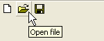

ToolBarToolTip()
Syntax
ToolBarToolTip(#ToolBar, Button, Text$)Description
Associates the specified text to the #ToolBar button. A tool-tip text is a text which is displayed when the mouse cursor is over the button for a few time (usually a small yellow floating box).
Parameters
#ToolBar The toolbar to use. Button The toolbar button to set the tooltip. Text$ The new text to associate with the toolbar button. If the text is empty, the tooltip is removed.
Return value
None.
Example
If OpenWindow(0, 0, 0, 150, 60, "ToolBar", #PB_Window_SystemMenu | #PB_Window_ScreenCentered) If CreateToolBar(0, WindowID(0)) ToolBarStandardButton(0, #PB_ToolBarIcon_New) ToolBarStandardButton(1, #PB_ToolBarIcon_Open) ToolBarStandardButton(2, #PB_ToolBarIcon_Save) ToolBarToolTip(0, 0, "New document") ToolBarToolTip(0, 1, "Open file") ToolBarToolTip(0, 2, "Save file") EndIf Repeat Until WaitWindowEvent() = #PB_Event_CloseWindow EndIf

See Also
ToolBarStandardButton(), ToolBarImageButton(), ToolBarSeparator()
Supported OS
All